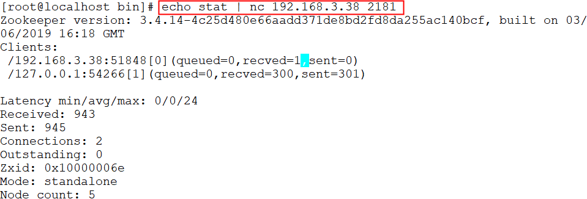
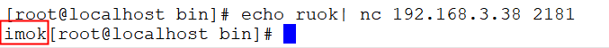
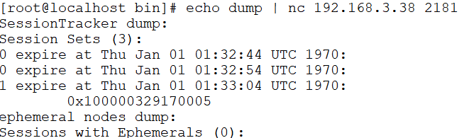

ZooKeeper は特定の4文字コマンドとの対話をサポートしており、ユーザーは ZooKeeper サービスの現在の状態や関連情報を取得できます。ユーザーはクライアント側で telenet または nc（netcat）を使用して ZooKeeper にコマンドを送信できます。
nc コマンドのインストール：
$ yum install nc # centos 或 $ sudo apt install netcat # ubuntu
4文字コマンドの形式：
echo [command] | nc [ip] [port]
ZooKeeper の一般的な4文字コマンドは以下のとおりです：
| 4文字コマンド | 機能説明 |
|---|---|
| conf | 3.3.0 バージョンで導入されました。サービス関連の設定の詳細情報を出力します。 |
| cons | 3.3.0 バージョンで導入されました。このサーバーに接続しているすべてのクライアントの接続・セッション詳細情報を一覧表示します。「受信/送信」パケット数、セッションID、操作遅延、最後に実行された操作などの情報が含まれます。 |
| crst | 3.3.0 バージョンで導入されました。すべての接続の接続統計とセッション統計をリセットします。 |
| dump | 重要なセッションと一時ノードを一覧表示します。このコマンドは leader ノードでのみ有効です。 |
| envi | サービスの環境の詳細情報を出力します。 |
| reqs | 未処理のリクエストを一覧表示します。 |
| ruok | サービスが正常な状態かどうかをテストします。正常であれば、サービスは「imok」を返します。そうでなければ何も応答しません。 |
| stat | パフォーマンスと接続に関するクライアントのリストを出力します。 |
| srst | サーバーの統計情報をリセットします。 |
| srvr | 3.3.0 バージョンで導入されました。サーバーへの接続の詳細情報を一覧表示します。 |
| wchs | 3.3.0 バージョンで導入されました。サーバーの watch の詳細情報を一覧表示します。 |
| wchc | 3.3.0 バージョンで導入されました。セッションごとにサーバーの watch の詳細情報を一覧表示します。出力は watch に関連するセッションのリストです。 |
| wchp | 3.3.0 バージョンで導入されました。パスごとにサーバーの watch の詳細情報を一覧表示します。セッションに関連するパスを出力します。 |
| mntr | 3.4.0 バージョンで導入されました。クラスターのヘルス状態を検出するために使用できる変数のリストを出力します。 |
公式リンクを参照：https://zookeeper.apache.org/doc/current/zookeeperAdmin.html#sc_4lw
4文字コマンドの使用
stat コマンド
stat コマンドは zk の状態情報を確認するために使用します。例は次のとおりです：
$ echo stat | nc 192.168.3.38 2181

ruok コマンド
ruok コマンドは現在の zkserver が起動しているかどうかを確認するために使用します。imok が返された場合は正常です。例は次のとおりです：
$ echo ruok | nc 192.168.3.38 2181

dump コマンド
dump コマンドは未処理のセッションと一時ノードを一覧表示するために使用します。例は次のとおりです：
$ echo dump | nc 192.168.3.38 2181

conf コマンド
conf コマンドはサーバー設定を確認するために使用します。例は次のとおりです：
$ echo conf | nc 192.168.3.38 2181

cons コマンド
cons コマンドはサーバーに接続しているクライアント情報を表示するために使用します。例は次のとおりです：
$ echo cons | nc 192.168.3.38 2181

envi コマンド
envi コマンドは環境変数を確認するために使用します。例は次のとおりです：
$ echo envi | nc 192.168.3.38 2181